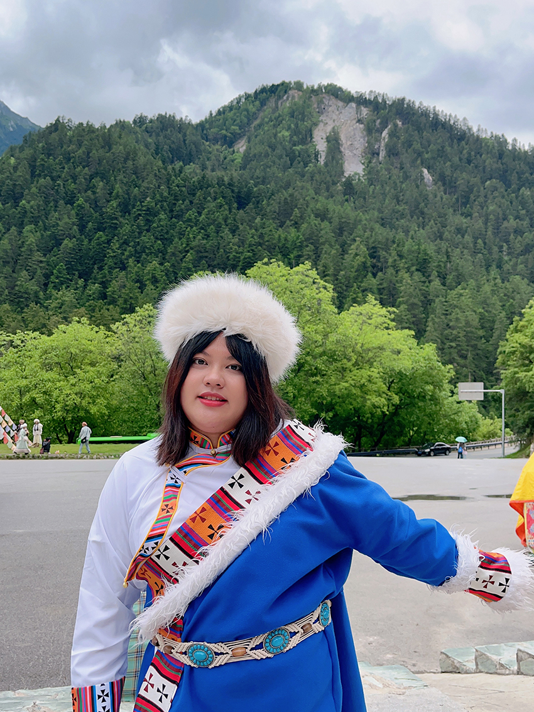

去年夏天是我第一次自己規劃去四川的自由行，藉由這篇文章想介紹給大家一些任何季節去都很漂亮又不踩雷的四川景點。地方涵蓋著名景點九寨溝、四姑娘山、成都市中心等，以下是我這次攜帶家人和男朋友一起旅行的行程，無論是剛畢業的新鮮人還是正值熱戀的情侶，或是有小孩的家庭甚至是年長的長輩都適合。
Day1
下午的飛機從桃園機場到成都天府機場，到成都已經是晚上七點多了，因機場離市中心比較偏遠和搭機比較勞累的緣故，我們選擇直接坐地鐵到火車站附近找酒店休息。由於整個旅行中的酒店，我認為非常的中規中矩，所以就不進行推薦了。
Day2【黃龍景區】
隔天清晨起床搭動車高鐵到黃龍九寨溝，買票進入景區，建議搭索道（纜車）上山沿著標示走看五彩池後徒步下山，此行程主要是欣賞下山沿途的風景，下山山路都是樓梯木棧道相對的輕鬆。下山後搭上巴士前往九寨旁的酒店休息。
| 五彩池。 |
推薦指數：三顆星（滿分五顆星）
遊玩時間約3-5小時，下山樓梯約需要走2小時，不建議腿腳不方便的長輩徒步下山，因山上海拔偏高，可以在上山前購買氧氣罐以防不適。
Day3【九寨溝】
清晨起床趕在開園前驅車到達景區，九寨溝遊客非常多需要提前至遊客中心買票再刷證件入園，園區內部很大，幾個重點景點都有大巴車站可以搭乘下車參觀，車上也會有解說員介紹景點的特別之處，也可以徒步慢慢欣賞沿途風景。
 |
| 九寨溝風景，湖水是極其清澈的藍和綠。 |
|  |
| 途中有設休息點提供餐飲，也有專門租借藏族服飾拍寫真照片的商家，要拍服飾建議留足夠的時間去，不然就會像我們一樣只能在附近隨便拍拍。 |
推薦指數：五顆星以上！！一定要去！！
九寨溝海拔不高不需要氧氣瓶，自然景色非常優美，不需要長途跋涉是長輩也會喜歡的景點之一，冬天去遇到下雪又是另一番景色。
Day4【四姑娘山】
最出名的是雪山的景，和九寨溝的遊覽方式很相似，是以搭乘園區巴士分景點欣賞，建議坐車到山上再慢慢晃下來，和九寨溝不同的是四姑娘山的草原和山脈比較多，園區內也可以見到野生的氂牛特別新奇。
| 因為是夏天去，所以雪山並不明顯。 |
Day5【成都市】
由於前三天的行程路途比較遙遠坐車時間多，這天我們規劃的行程主打的是休息，回到成都市在春熙路步行街附近住泡湯酒店，藉由泡澡緩解前幾天的勞累，當天只有在春熙路步行街附近逛街，看看成都市中心大樓燈光閃爍繁華的夜景，逛逛成都的百貨公司。
特別推薦喜歡動漫、追星的朋友們去附近的天府紅廣場，裡面除了有三四層樓的二次元正版周邊店和韓國明星專輯店之外，時不時還有活動如Kpop或宅舞隨機舞蹈，假日也有很多動漫coser自發聚集，樓內和對面的天府廣場也有小吃街可以逛逛。
Day6【漫花莊園】
這是坐落在成都市的一大片花海和小小動物園，一年四季都有不同的花海可以欣賞，是非常好拍照的地方，當時去的時候是夏天，主打的是薰衣草花海和向日葵，看網路上的介紹春天去是最好看的。另外還有仙人掌區域和小動物區，動物可以近距離觀賞和餵食，有羊駝、小馬、小牛、小鹿、豚鼠、鳥類等等很適合帶小孩子來參觀遊玩。
| 沒有女孩子能拒絕廣大的花海，連我媽媽都很興奮！！ |
| 這可是真的仙人掌喔！ |
| 很乖的小羊駝（據說可以摸，但我不敢）。 |
| 還能進入孔雀園區近距離觀看和拍照。 |
推薦指數：五顆星。
一張票可以玩一天，園區內有小吃可以買不會很貴，以當地來說園區雖然不算大，但容納的設施和區域很豐富，能近距離觀賞一些動物真的很特別，適合慢慢閒逛拍照。
Day7【三星堆博物館】
從春熙路步行街搭巴士一小時就能到，是當地有名的三星堆遺址博物館，算是寓教於樂的景點，也可以當作夏天避暑去的好地方，由於博物館比較熱門，需要前幾天在網路上預約，憑證件入場不需要門票費。
推薦指數：四顆星。
對部分人來說博物館是一個相對無聊且靜態的地方，但在愛好者的眼裡來說卻是不可多得的寶藏園區。回台飛機是晚上七點到十點，其實可以當晚就回去，但規畫行程時為了不趕時間又選擇了在成都多留一天。
【總結】
行程規劃總體來說前三天比較累，需要坐長途的交通工具，且山區難免天氣不穩定下雨或偏冷是常有的事情，建議可以帶一件保暖外套，山上紫外線大，太陽眼鏡跟帽子也是必不可少的。這三天行程我們有請當地旅行社安排住宿和司機和包了一台保母車，加上景點門票價錢約1,700人民幣一人，參加完我會建議大家還是自行搭公共交通去，不然一天要坐五六個小時的車容易受不了。
成都市的行程，考慮到父母的體力沒有我們年輕人好，所以選擇一天只去一個大景點的方式旅遊。餐飲部分有吃過百貨公司的餐廳，也有嚐過路邊小攤子美食，當地的飲食習慣是非常麻辣的，不太能吃辣的，可能需要帶胃藥或自備泡麵，但無論如何總得要吃一次正宗的四川麻辣火鍋。整體上來說特色菜是非常美味的，也可以在連鎖餐廳內吃到外國料理、外省料理等等，不一定全是辣的。
以上是推薦的一周自由行行程，可以依據喜好增加或減少其中的項目，也祝大家在假期旅行中能得到快樂和身心的休息。